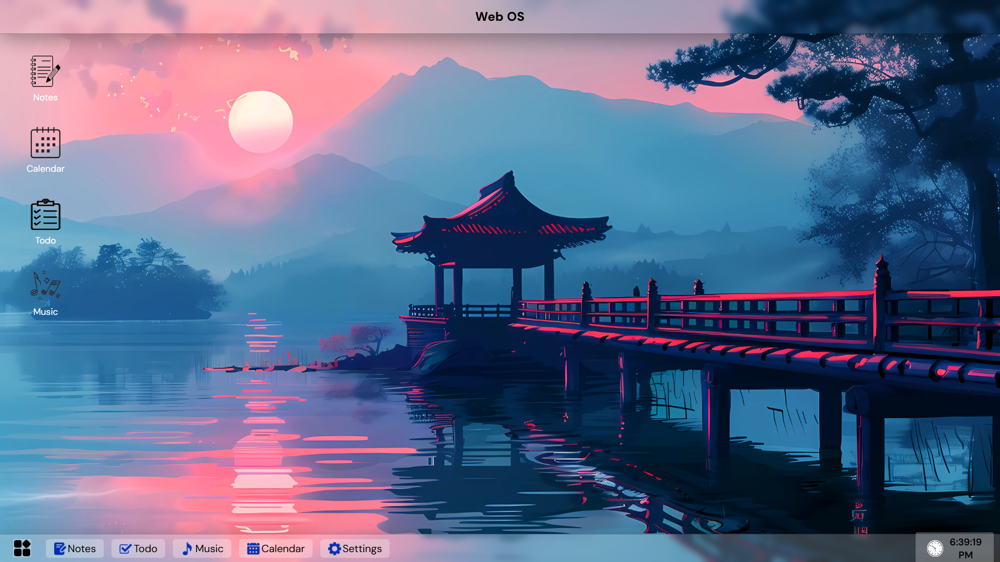
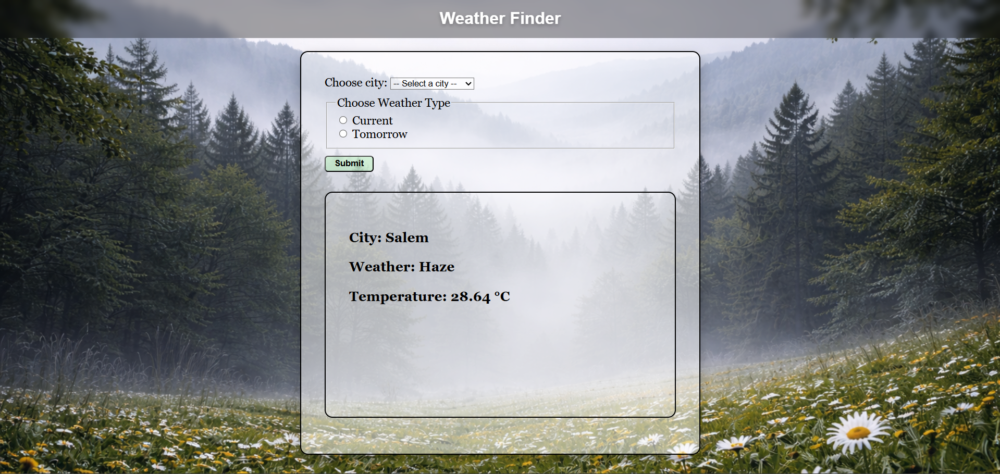
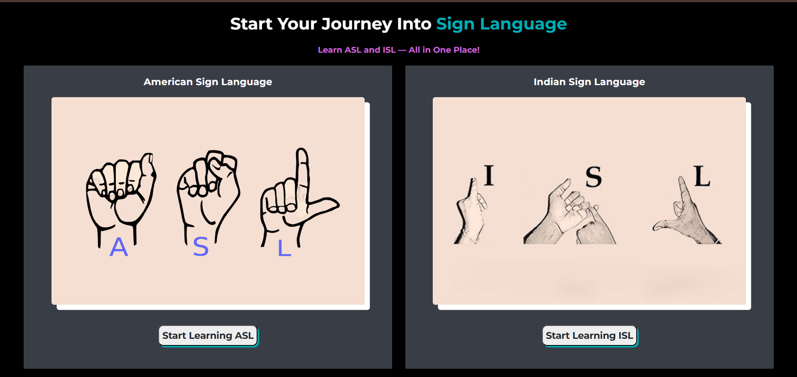
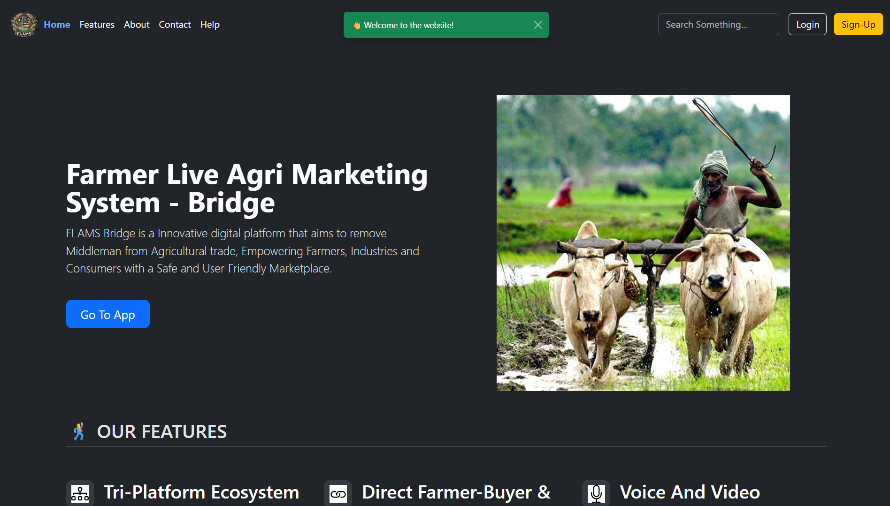

Project - Web OS
Built 𝗪𝗲𝗯 𝗢𝗦, a browser-based operating system experience that transforms the web into an interactive desktop workspace.
Features include app shortcuts, taskbar navigation, Notes, To-Do Manager, Music Player, Calendar, customizable UI, persistent storage, and responsive design. Developed using HTML5, CSS3, and JavaScript with a focus on modular design and desktop-like interactions.
Completed: 16 March 2026
Weather Finder Web App
Built a full-stack Weather Finder & Prediction web application that provides real-time weather updates and tomorrow’s forecast with dynamic UI changes based on weather conditions.
Features include city-based search, responsive design, API integration, and secure environment variable management. Developed using Node.js, Express.js, Axios, EJS, OpenWeather API, HTML, CSS, and dotenv.
Completed: 24 Dec 2025
SL Learning Tool! 🤟
Developed the SL Learning Tool, a platform designed to help beginners learn American Sign Language (ASL).
Features include 175+ words across multiple categories along with integrated educational videos from the Learn How to Sign YouTube channel. Built with a fully responsive and visually engaging interface to make sign language learning simple and accessible.
Completed: 2 Nov 2025
FLAMS Bridge
Contributed to the development of the FLAMS Bridge (Farmer Live Agri Marketing System Bridge) hackathon project by building the responsive website interface for farmers, customers, and companies.
The platform improves transparency and fair pricing in agriculture by enabling direct interaction without middlemen. Built during the Hackathon at KPR Institute of Engineering and Technology using HTML, CSS, JavaScript, Bootstrap, and Firebase.
Completed: 24 April 2025